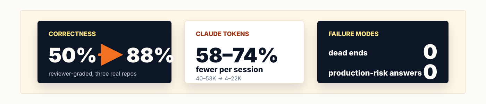
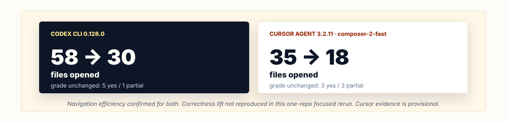
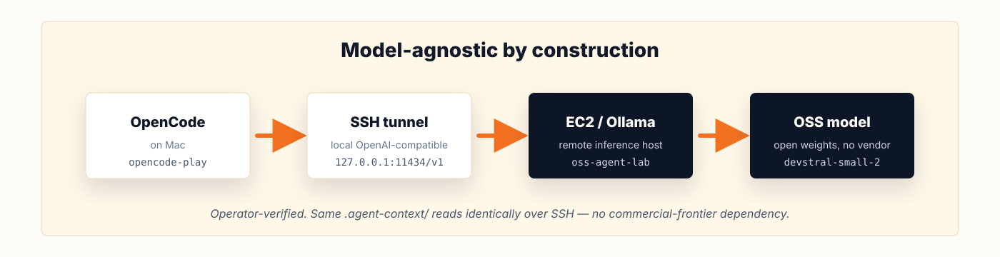

agent-context
Checked-in repo evidence for coding agents
What we built · what we measured · what we narrowed
Cursor Meetup · May 2026
github.com/cote-star/agent-context
1 / 14The cold-start tax
Every coding-agent session starts cold:
- re-reads the directory tree
- guesses ownership boundaries
- misses the one invariant that should have shaped the answer
Same shape in Claude, Codex, Cursor, Gemini, OpenCode. Compounds across every question, every reviewer, every agent.
 2 / 14
2 / 14
One folder, every agent
Commit .agent-context/ to your repo. init writes the same routing block into four standard project-rule files. Modern agents read several of these together — not 1:1 — so any one is enough to route any agent.
| Routing file | Common pick-ups |
|---|---|
.cursorrules | Cursor |
CLAUDE.md | Claude · Claude Code · Cursor |
AGENTS.md | Codex · OpenCode · Cursor |
GEMINI.md | Gemini |
One pack. Four routing files. Redundant by design — any one routes any agent.
3 / 14What's in the pack

Three layers + quality. Tier 3 = 11 files committed alongside your code.
4 / 14Two reading patterns, one pack
Search-and-verify (Codex, Cursor, OpenCode w/ local model)
search_scope → scoped grep → verification shortcut → answer
Trust-and-follow (Claude, Gemini, OpenCode w/ Anthropic backend)
routing block → required files → completeness contract → answerSame content. Two reading paths. Most authoring projects pick one mode and break for the other; agent-context provides scaffolding for both.
5 / 14Live demo · init
$ cd examples/hello-service
$ ~/agent-context/bin/agent-context init --tier 3 .
Initialized .agent-context/current/ with 11 files (tier 3)
Copied helper tools to .agent-context/tools/
Wrote routing block in CLAUDE.md
Wrote routing block in AGENTS.md
Wrote routing block in GEMINI.md
Wrote routing block in .cursorrulesOpen .cursorrules → routing block lives there. Same in CLAUDE.md, AGENTS.md, GEMINI.md.
Live demo · agent fills the pack
Set up agent context for this repo.
[ Pre-recorded MP4 — ~30s real, sped up to ~15s ]
SKILL.md drives the agent:
- enumerate every subsystem first (so nothing silently gets skipped)
- fill all 11 templates
- write acceptance tests with grep verification
- run the machine checks
Live demo · verify
$ ~/agent-context/bin/agent-context verify .
OK: agent-context passed machine-checkable validation (tier 3)Checks: structure · JSON schema · real glob matches · template-marker elimination.
CI-friendly. Pair with freshness (drift detection) and doctor (env diagnostics).
What we measured · March / April 2026

78+ reviewer-graded answers across three repos with grep-backed verification:
- ML pipeline · 501 files · Python
- Dual CLI · 155 files · Rust + Node.js
- React frontend · 1,982 files · TypeScript
Same template, zero modifications.
9 / 14What the May 2026 rerun showed

Honest read-out:
- Navigation efficiency confirmed for Codex and Cursor
- Correctness lift not reproduced in this one-repo focused rerun
- Stale-pack guidance caused 3 dead ends in the Codex structured run
Cursor evidence is provisional · aggregate measurement on the v0.5 roadmap.
10 / 14Model-agnostic by construction

The pack is markdown and JSON; routing blocks are plain text.
Operator-verified with OpenCode + OSS model (Devstral Small 2 / Qwen 4B) over an SSH tunnel. No commercial-frontier dependency.
11 / 14Lessons from the rerun
Freshness is part of the claim. Stale pack guidance caused 3 dead ends in the Codex structured run. A pack that drifts from code is worse than no pack — agents trust it.
Reviewer grading > self-scoring. Self-reported file counts can mislead. Reviewer-graded yes-rate against ground truth is the only metric we trust for correctness.
Tier system as adoption ladder. Start at tier 1 (2 files). Scale when the team is ready. Each tier is a valid stopping point — no hidden dependency on the full pack.
Repo-agnostic design ≠ universal evidence. Three code-repo types measured. Non-code corpora (datasets, design systems, runbooks) — designed to generalize, not yet measured.
12 / 14Try it tonight
git clone https://github.com/cote-star/agent-context.git ~/agent-context
cd /path/to/your-repo
~/agent-context/bin/agent-context init --tier 3 .Or open the repo in your agent of choice and ask:
Set up agent context for this repo.
One folder. Every coding agent. Read before any edit.
github.com/cote-star/agent-context
13 / 14Questions
github.com/cote-star/agent-context
agent-context init · verify · freshness · doctor
Thank you.
14 / 14